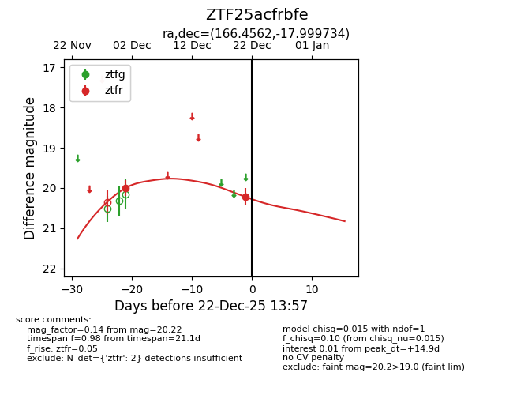
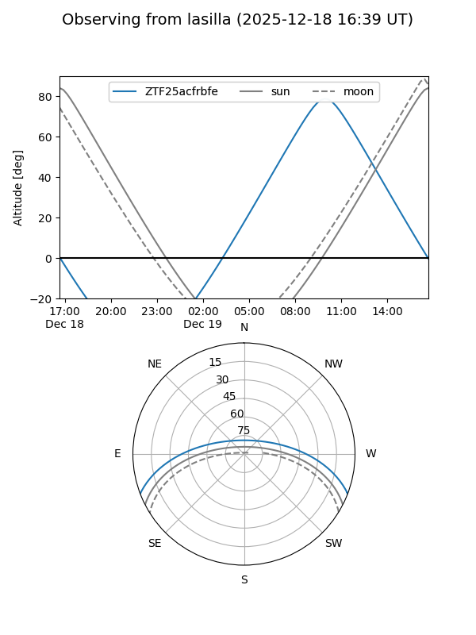
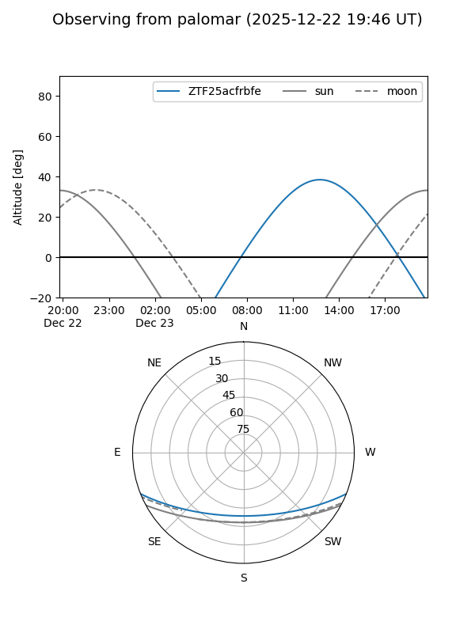

ZTF25acfrbfe
Target ZTF25acfrbfe at 2025-12-18 11:17
Aliases and brokers:
FINK: fink-portal.org/ZTF25acfrbfe
Lasair: lasair-ztf.lsst.ac.uk/objects/ZTF25acfrbfe
ALeRCE: alerce.online/object/ZTF25acfrbfe
alt names
ZTF25acfrbfe (ztf,fink_ztf)
Coordinates:
equatorial (ra, dec) = 166.4562,-17.99973
equatorial (HMS+DMS) = 11:05:49.48,-17:59:59.04
galactic (l, b) = (270.4159,+38.11421)
Photometry
last ztfr=20.00
1 ztfr detections
Lightcurve

Visibility


Additional plots